Debug
jliucx
2024-12-5
Last updated: 2024-12-05
Checks: 6 1
Knit directory: Getting_started/
This reproducible R Markdown analysis was created with workflowr (version 1.7.1). The Checks tab describes the reproducibility checks that were applied when the results were created. The Past versions tab lists the development history.
Great! Since the R Markdown file has been committed to the Git repository, you know the exact version of the code that produced these results.
Great job! The global environment was empty. Objects defined in the global environment can affect the analysis in your R Markdown file in unknown ways. For reproduciblity it’s best to always run the code in an empty environment.
The command set.seed(20240712) was run prior to running the code in the R Markdown file. Setting a seed ensures that any results that rely on randomness, e.g. subsampling or permutations, are reproducible.
Great job! Recording the operating system, R version, and package versions is critical for reproducibility.
Nice! There were no cached chunks for this analysis, so you can be confident that you successfully produced the results during this run.
Using absolute paths to the files within your workflowr project makes it difficult for you and others to run your code on a different machine. Change the absolute path(s) below to the suggested relative path(s) to make your code more reproducible.
| absolute | relative |
|---|---|
| /project/xuanyao/jiaming/Getting_started/output/calibration_power_t_10000_no_approximation_2.csv | output/calibration_power_t_10000_no_approximation_2.csv |
| /project/xuanyao/jiaming/Getting_started/output/calibration_power_t_2000_use_approximation_2.csv | output/calibration_power_t_2000_use_approximation_2.csv |
| /project/xuanyao/jiaming/Getting_started/output/calibration_power_include_trans_t_2000_use_approximation_rank.csv | output/calibration_power_include_trans_t_2000_use_approximation_rank.csv |
| /project/xuanyao/jiaming/Getting_started/output/calibration_power_include_trans_t_2000_use_approximation_rank_normalized.csv | output/calibration_power_include_trans_t_2000_use_approximation_rank_normalized.csv |
| /project/xuanyao/jiaming/Getting_started/output/calibration_power_include_trans_t_2000_use_approximation_log.csv | output/calibration_power_include_trans_t_2000_use_approximation_log.csv |
| /project/xuanyao/jiaming/Getting_started/output/calibration_power_include_trans_pval_wilcoxon_2000_use_approximation_left.csv | output/calibration_power_include_trans_pval_wilcoxon_2000_use_approximation_left.csv |
| /project/xuanyao/jiaming/Getting_started/output/calibration_power_include_trans_t_2000_use_approximation_twoside.csv | output/calibration_power_include_trans_t_2000_use_approximation_twoside.csv |
| /project/xuanyao/jiaming/Getting_started/output/test_rank_wilcox.csv | output/test_rank_wilcox.csv |
| /project/xuanyao/jiaming/Getting_started/output/power_include_trans_t_2000_use_approximation.csv | output/power_include_trans_t_2000_use_approximation.csv |
| /project/xuanyao/jiaming/Getting_started/output/both_trans_author_threshold_0.05_2/results_run_discovery_analysis.rds | output/both_trans_author_threshold_0.05_2/results_run_discovery_analysis.rds |
| /project/xuanyao/jiaming/Getting_started/output/both_trans_author_threshold_0.05_2/results_run_calibration_check.rds | output/both_trans_author_threshold_0.05_2/results_run_calibration_check.rds |
Great! You are using Git for version control. Tracking code development and connecting the code version to the results is critical for reproducibility.
The results in this page were generated with repository version 3445431. See the Past versions tab to see a history of the changes made to the R Markdown and HTML files.
Note that you need to be careful to ensure that all relevant files for the analysis have been committed to Git prior to generating the results (you can use wflow_publish or wflow_git_commit). workflowr only checks the R Markdown file, but you know if there are other scripts or data files that it depends on. Below is the status of the Git repository when the results were generated:
Ignored files:
Ignored: .Rhistory
Ignored: .Rproj.user/
Ignored: analysis/job-info.err
Ignored: analysis/job-info.out
Ignored: analysis/run.sh
Ignored: analysis/run_R.sh
Untracked files:
Untracked: Rplots.pdf
Untracked: analysis/sceptre_singleton.R
Untracked: analysis/sceptre_singleton.Rmd
Untracked: analysis/sceptre_threshold.Rmd
Untracked: code/debug.Rmd
Untracked: code/fit_skew_normal.cpp
Untracked: code/functions.R
Untracked: code/minp.R
Untracked: code/permutation.err
Untracked: code/permutation.out
Untracked: code/startover.R
Untracked: code/t_test.cpp
Untracked: code/test.err
Untracked: code/test.out
Untracked: code/test_gene_module_reduced.R
Untracked: code/test_gene_module_reduced.Rmd
Untracked: code/test_gene_p.R
Untracked: code/test_gene_p.Rmd
Untracked: data/
Untracked: output/SNP_gene_statistics_sceptre_approximation.csv
Untracked: output/SNP_gene_statistics_sceptre_no_approximation.csv
Untracked: output/SNP_p_no_approximation.csv
Untracked: output/SNP_p_t_statistics_approximation.csv
Untracked: output/both_trans_author_permutation/
Untracked: output/debug/
Untracked: output/try_sceptre_skew_fit_normalized_threshold_quantile_transform.csv
Unstaged changes:
Modified: .gitignore
Modified: analysis/TATES.Rmd
Modified: analysis/_site.yml
Deleted: analysis/create_grna_target_data_frame.Rmd
Modified: analysis/qqplot.Rmd
Modified: analysis/sceptre.Rmd
Modified: analysis/sceptre_example.Rmd
Deleted: analysis/seurat_example.Rmd
Modified: analysis/summary.Rmd
Deleted: analysis/try_Knit.Rmd
Deleted: analysis/try_rcc.Rmd
Deleted: code/job-info.err
Deleted: code/job-info.out
Modified: code/plot.Rmd
Deleted: code/results.csv
Deleted: code/results_wilcox_pval.csv
Modified: code/run_R.sh
Modified: code/test_gene_module.R
Modified: code/test_gene_module.Rmd
Deleted: code/try.R
Deleted: code/try.Rmd
Deleted: output/both_trans_author_threshold_0.05_2/plot_assign_grnas.png
Deleted: output/both_trans_author_threshold_0.05_2/plot_grna_count_distributions.png
Deleted: output/both_trans_author_threshold_0.05_2/plot_run_calibration_check.png
Deleted: output/both_trans_author_threshold_0.05_2/plot_run_discovery_analysis.png
Deleted: output/both_trans_author_threshold_0.05_2/plot_run_power_check.png
Deleted: output/both_trans_author_threshold_0.05_2/plot_run_qc.png
Note that any generated files, e.g. HTML, png, CSS, etc., are not included in this status report because it is ok for generated content to have uncommitted changes.
These are the previous versions of the repository in which changes were made to the R Markdown (analysis/debug.Rmd) and HTML (docs/debug.html) files. If you’ve configured a remote Git repository (see ?wflow_git_remote), click on the hyperlinks in the table below to view the files as they were in that past version.
| File | Version | Author | Date | Message |
|---|---|---|---|---|
| Rmd | 3445431 | jliucx | 2024-12-06 | add title and subtitle |
| html | 8974f05 | jliucx | 2024-12-06 | Build site. |
| Rmd | 1faa081 | jliucx | 2024-12-06 | update |
library(ggplot2)
library(dplyr)
Attaching package: 'dplyr'The following objects are masked from 'package:stats':
filter, lagThe following objects are masked from 'package:base':
intersect, setdiff, setequal, unionlibrary(readr)
directories <- "data/STINGseq-v1_GDO"
grna_target_data_frame <- data.frame(read_csv(paste0(directories,"/grna_target_data_frame.csv")))
── Column specification ────────────────────────────────────────────────────────
cols(
grna_id = col_character(),
grna_target = col_character(),
chr = col_character(),
start = col_double(),
end = col_double()
)gg_qqplot <- function(ps, ci = 0.95) {
n <- length(ps)
df <- data.frame(
observed = -log10(sort(ps)),
expected = -log10(ppoints(n)),
clower = -log10(qbeta(p = (1 - ci) / 2, shape1 = 1:n, shape2 = n:1)),
cupper = -log10(qbeta(p = (1 + ci) / 2, shape1 = 1:n, shape2 = n:1))
)
log10Pe <- expression(paste("Expected -log"[10], plain(P)))
log10Po <- expression(paste("Observed -log"[10], plain(P)))
ggplot(df) +
geom_ribbon(mapping = aes(x = expected, ymin = clower, ymax = cupper),
alpha = 0.1) +
geom_point(aes(expected, observed), size = 1.5, color="red") +
geom_abline(intercept = 0, slope = 1, alpha = 0.5) +
xlab(log10Pe) + ylab(log10Po)
}
p_t_10000_negative <- as.vector(as.matrix(read.csv("/project/xuanyao/jiaming/Getting_started/output/calibration_power_t_10000_no_approximation_2.csv", header = TRUE, row.names = 1))[13:24,])
p_t_2000_skn_negative <- as.vector(as.matrix(read.csv("/project/xuanyao/jiaming/Getting_started/output/calibration_power_t_2000_use_approximation_2.csv", header = TRUE, row.names = 1))[13:24,])
p_t_10000_positive <- as.vector(as.matrix(read.csv("/project/xuanyao/jiaming/Getting_started/output/calibration_power_t_10000_no_approximation_2.csv", header = TRUE, row.names = 1))[1:12,])
p_t_2000_skn_positive <- as.vector(as.matrix(read.csv("/project/xuanyao/jiaming/Getting_started/output/calibration_power_t_2000_use_approximation_2.csv", header = TRUE, row.names = 1))[1:12,])
p_t_rank_2000_negative <- as.vector(as.matrix(read.csv("/project/xuanyao/jiaming/Getting_started/output/calibration_power_include_trans_t_2000_use_approximation_rank.csv", header = TRUE, row.names = 1))[23:34,])
p_t_rank_2000_positive <- as.vector(as.matrix(read.csv("/project/xuanyao/jiaming/Getting_started/output/calibration_power_include_trans_t_2000_use_approximation_rank.csv", header = TRUE, row.names = 1))[1:22,])
p_t_rank_normalize_2000_negative <- as.vector(as.matrix(read.csv("/project/xuanyao/jiaming/Getting_started/output/calibration_power_include_trans_t_2000_use_approximation_rank_normalized.csv", header = TRUE, row.names = 1))[23:34,])
p_t_rank_normalize_2000_positive <- as.vector(as.matrix(read.csv("/project/xuanyao/jiaming/Getting_started/output/calibration_power_include_trans_t_2000_use_approximation_rank_normalized.csv", header = TRUE, row.names = 1))[1:22,])
p_t_log_2000_negative <- as.vector(as.matrix(read.csv("/project/xuanyao/jiaming/Getting_started/output/calibration_power_include_trans_t_2000_use_approximation_log.csv", header = TRUE, row.names = 1))[23:34,])
p_t_log_2000_positive <- as.vector(as.matrix(read.csv("/project/xuanyao/jiaming/Getting_started/output/calibration_power_include_trans_t_2000_use_approximation_log.csv", header = TRUE, row.names = 1))[1:22,])
p_wilcox_p_2000_negative <- as.vector(as.matrix(read.csv("/project/xuanyao/jiaming/Getting_started/output/calibration_power_include_trans_pval_wilcoxon_2000_use_approximation_left.csv", header = TRUE, row.names = 1))[23:34,])
p_wilcox_p_2000_positive <- as.vector(as.matrix(read.csv("/project/xuanyao/jiaming/Getting_started/output/calibration_power_include_trans_pval_wilcoxon_2000_use_approximation_left.csv", header = TRUE, row.names = 1))[1:22,])
p_new_positive <- as.vector(as.matrix(read.csv("/project/xuanyao/jiaming/Getting_started/output/calibration_power_include_trans_t_2000_use_approximation_twoside.csv", header = TRUE, row.names = 1))[1:22,])
p_new_negative <- as.vector(as.matrix(read.csv("/project/xuanyao/jiaming/Getting_started/output/calibration_power_include_trans_t_2000_use_approximation_twoside.csv", header = TRUE, row.names = 1))[23:34,])
p_test <- as.vector(as.matrix(read.csv("/project/xuanyao/jiaming/Getting_started/output/calibration_power_include_trans_pval_wilcoxon_2000_use_approximation_left.csv", header = TRUE, row.names = 1))[1:22,])
p_test_2 <- as.vector(as.matrix(read.csv("/project/xuanyao/jiaming/Getting_started/output/test_rank_wilcox.csv", header = TRUE, row.names = 1))[1:22,])Runtime and peakRAM comparison
Type Perturbation Null.statistics Running.time Peak.RAM
1 t test (No approximation) 24 10000 6128s 124150MB
2 t test (Skew normal) 24 2000 6245s 22324MBCalibration check (t-test)
Calibration of NT grna pval estimated from 10000 null statistics (No approximation)
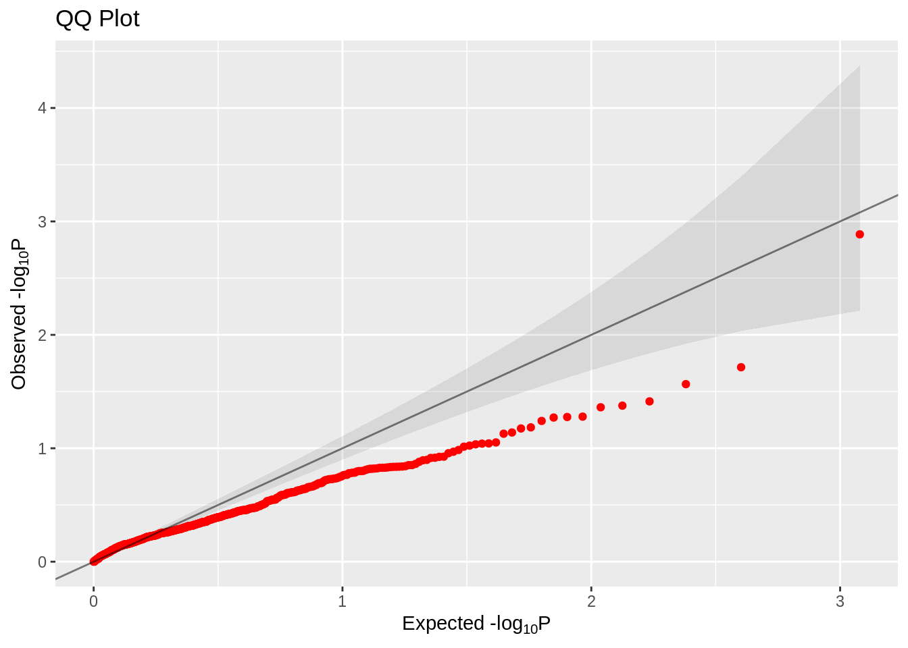
| Version | Author | Date |
|---|---|---|
| 8974f05 | jliucx | 2024-12-06 |
Calibration of NT grna pval estimated from 2000 null statistics with skew t approximation

| Version | Author | Date |
|---|---|---|
| 8974f05 | jliucx | 2024-12-06 |
Calibration of NT grna pval estimated from 2000 null statistics with skew t approximation（normalized rank-based t test）

| Version | Author | Date |
|---|---|---|
| 8974f05 | jliucx | 2024-12-06 |
Calibration of NT grna pval estimated from 2000 null statistics with skew t approximation（log transformed t test）

| Version | Author | Date |
|---|---|---|
| 8974f05 | jliucx | 2024-12-06 |
Calibration of NT grna pval estimated from 2000 null statistics with skew t approximation（rank-based t test）

| Version | Author | Date |
|---|---|---|
| 8974f05 | jliucx | 2024-12-06 |
gg_qqplot(p_wilcox_p_2000_negative)
| Version | Author | Date |
|---|---|---|
| 8974f05 | jliucx | 2024-12-06 |
Power check (t-test)
Power of NT grna pval estimated from 10000 null statistics with no approximation

| Version | Author | Date |
|---|---|---|
| 8974f05 | jliucx | 2024-12-06 |
Power of NT grna pval estimated from 2000 null statistics with skew t approximation

| Version | Author | Date |
|---|---|---|
| 8974f05 | jliucx | 2024-12-06 |
Power of NT grna pval estimated from 2000 null statistics with skew t approximation (include trans-effect SNPs)
gg_qqplot(as.vector(as.matrix(read.csv("/project/xuanyao/jiaming/Getting_started/output/power_include_trans_t_2000_use_approximation.csv", header = TRUE, row.names = 1))))
| Version | Author | Date |
|---|---|---|
| 8974f05 | jliucx | 2024-12-06 |
Power of NT grna pval estimated from 2000 null statistics with skew t approximation（normalized rank-based t test）

| Version | Author | Date |
|---|---|---|
| 8974f05 | jliucx | 2024-12-06 |
Power of NT grna pval estimated from 2000 null statistics with skew t approximation（log transformed t test）

| Version | Author | Date |
|---|---|---|
| 8974f05 | jliucx | 2024-12-06 |
Power of NT grna pval estimated from 2000 null statistics with skew t approximation（rank-based t test）

| Version | Author | Date |
|---|---|---|
| 8974f05 | jliucx | 2024-12-06 |
gg_qqplot(p_wilcox_p_2000_positive)
| Version | Author | Date |
|---|---|---|
| 8974f05 | jliucx | 2024-12-06 |
Plots comparing pval from no approximation and skew normal approximation
# Binding the vectors
p_10000 <- c(p_t_10000_negative, p_t_10000_positive)
p_skn_2000 <- c(p_t_2000_skn_negative, p_t_2000_skn_positive)
# Scatter plot of bind_10000 against bind_2000
plot(p_10000, p_skn_2000,
xlab = "p values of 10000 null statistics with no approximation",
ylab = "p values of 2000 null statistics with skewed t",
main = "Skew t approximation (2000 null statistics)",
pch = 16, # pch = 16 gives solid circles
cex = 0.6, # cex < 1 reduces the size of the points,
col = "red"
)
| Version | Author | Date |
|---|---|---|
| 8974f05 | jliucx | 2024-12-06 |
Including SNPs that have trans effect as positive control
Original positive control (12*50 pvals)
p_t_10000_positive_include_trans <- as.vector(as.matrix(read.csv("/project/xuanyao/jiaming/Getting_started/output/power_include_trans_t_2000_use_approximation.csv", header = TRUE, row.names = 1))[11:22,])
gg_qqplot(p_t_10000_positive_include_trans)
| Version | Author | Date |
|---|---|---|
| 8974f05 | jliucx | 2024-12-06 |
Positive control of SNPs that have trans effect only (10*50 pvals)
p_t_10000_positive_include_trans <- as.vector(as.matrix(read.csv("/project/xuanyao/jiaming/Getting_started/output/power_include_trans_t_2000_use_approximation.csv", header = TRUE, row.names = 1))[1:10,])
gg_qqplot(p_t_10000_positive_include_trans)
| Version | Author | Date |
|---|---|---|
| 8974f05 | jliucx | 2024-12-06 |
Positive control after including SNPs that have trans effect (22*50 pvals)
p_t_10000_positive_include_trans <- as.vector(as.matrix(read.csv("/project/xuanyao/jiaming/Getting_started/output/power_include_trans_t_2000_use_approximation.csv", header = TRUE, row.names = 1)))
gg_qqplot(p_t_10000_positive_include_trans)
| Version | Author | Date |
|---|---|---|
| 8974f05 | jliucx | 2024-12-06 |
Calibration check (wilcoxon-test)
I use wilcoxon p-value as statistics, and find the left-tail probability to calculate p-value.
p_wilcox_negative <- as.vector(as.matrix(read.csv("/project/xuanyao/jiaming/Getting_started/output/calibration_power_include_trans_pval_wilcoxon_2000_use_approximation_left.csv", header = TRUE, row.names = 1))[23:34,])
gg_qqplot(p_wilcox_negative)
| Version | Author | Date |
|---|---|---|
| 8974f05 | jliucx | 2024-12-06 |
Power check (wilcoxon-test)
p_wilcox_positive <- as.vector(as.matrix(read.csv("/project/xuanyao/jiaming/Getting_started/output/calibration_power_include_trans_pval_wilcoxon_2000_use_approximation_left.csv", header = TRUE, row.names = 1))[1:22,])
gg_qqplot(p_wilcox_positive)
| Version | Author | Date |
|---|---|---|
| 8974f05 | jliucx | 2024-12-06 |
Test on gene p value
library(tidyr)
gene_modules <- readRDS("data/gene_modules_id.rds")
gene_wise_p <- read_csv("output/startover/test/gene_wise_p.csv")Warning: Missing column names filled in: 'X1' [1]
── Column specification ────────────────────────────────────────────────────────
cols(
.default = col_double(),
X1 = col_character()
)
ℹ Use `spec()` for the full column specifications.sceptre <- rbind(readRDS("/project/xuanyao/jiaming/Getting_started/output/both_trans_author_threshold_0.05_2/results_run_discovery_analysis.rds")[,c(1,2,7)],
readRDS("/project/xuanyao/jiaming/Getting_started/output/both_trans_author_threshold_0.05_2/results_run_calibration_check.rds")[,c(1,2,7)])
sceptre$p_value[sceptre$p_value == 1] <- 1 - 1e-15
sceptre <- sceptre[!is.na(sceptre$p_value), ]
sceptre_wide <- sceptre %>%
pivot_wider(names_from = response_id, values_from = p_value) %>%
as.data.frame()
# Set the row names to be the grna_id and remove the grna_id column
rownames(sceptre_wide) <- sceptre_wide$grna_id
sceptre_wide <- sceptre_wide[, -1]
# Display the reformatted data frame
rownames(gene_wise_p) <- gene_wise_p$X1Warning: Setting row names on a tibble is deprecated.# Reorder rows of sceptre_wide to match gene_wise_p (subset rows by intersection)
sceptre_wide <- sceptre_wide[rownames(gene_wise_p)[rownames(gene_wise_p) %in% rownames(sceptre_wide)], ]
# Reorder columns of sceptre_wide to match gene_wise_p
sceptre_wide <- sceptre_wide[, colnames(gene_wise_p)[-1], drop = FALSE]gene_wise_p[1:5,1:5]# A tibble: 5 × 5
X1 ENSG00000187608 ENSG00000188157 ENSG00000176022 ENSG00000157933
<chr> <dbl> <dbl> <dbl> <dbl>
1 SNP-1_1 0.686 0.176 0.204 0.263
2 SNP-1_2 0.733 0.780 0.667 0.527
3 SNP-2_1 0.813 0.915 0.890 0.436
4 SNP-2_2 0.357 0.748 0.222 0.497
5 SNP-3_1 0.406 0.159 0.965 0.411sceptre_wide[1:5,1:5] ENSG00000187608 ENSG00000188157 ENSG00000176022 ENSG00000157933
SNP-1_1 0.740 0.616 0.336 0.512
SNP-1_2 0.348 0.888 0.800 0.608
SNP-2_1 0.592 0.628 0.300 0.648
SNP-2_2 0.420 0.448 0.296 0.296
SNP-3_1 0.636 0.168 0.300 0.872
ENSG00000157916
SNP-1_1 0.360
SNP-1_2 0.420
SNP-2_1 0.584
SNP-2_2 0.576
SNP-3_1 0.916# Define indices
indices <- c(10, 20, 30, 120, 124)
# Loop through indices for scatter and QQ plots
for (index in indices) {
# Extract vectors for the current index
vector1 <- as.vector(as.matrix(gene_wise_p[index, -1]))
vector2 <- as.vector(as.matrix(sceptre_wide[index, ]))
# Filter out NA values
valid_indices <- !is.na(vector1) & !is.na(vector2)
filtered_vector1 <- vector1[valid_indices]
filtered_vector2 <- vector2[valid_indices]
# Scatter Plot
plot(
filtered_vector1, filtered_vector2,
xlab = "Gene Wise P Values",
ylab = "Sceptre Wide P Values",
main = paste0("Scatter Plot for Index ", index),
pch = 16,
col = "blue",
cex = 0.7
)
# Pause for user input to display the next plot
# readline(prompt = "Press [Enter] to view the QQ plot for this index...")
# QQ Plot
qqplot(
filtered_vector1, filtered_vector2,
xlab = "Theoretical Quantiles",
ylab = "Sample Quantiles",
main = paste0("QQ Plot for Index ", index),
pch = 16,
col = "blue",
cex = 0.7
)
abline(0, 1, col = "red", lwd = 2)
# Pause again before moving to the next index
# readline(prompt = "Press [Enter] to move to the next index...")
}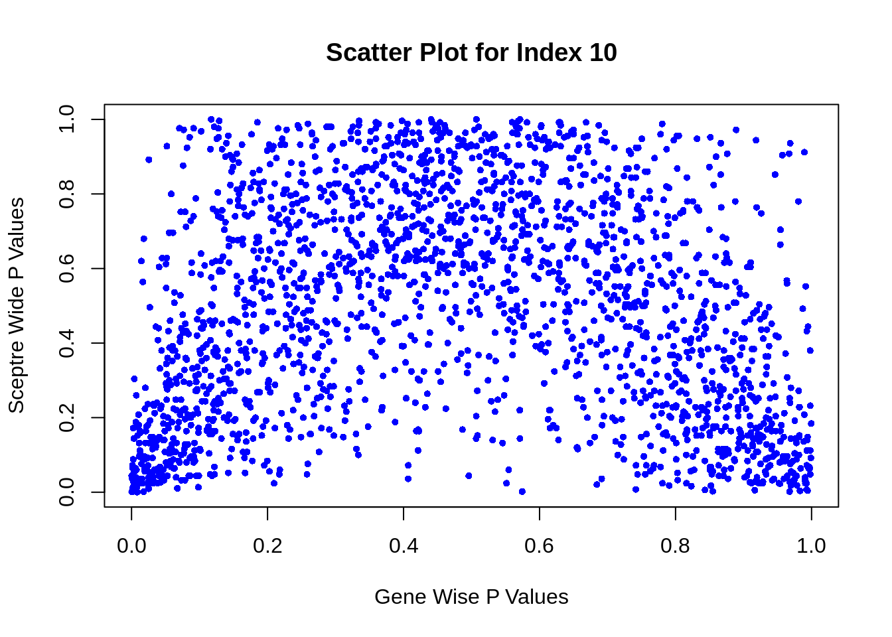
| Version | Author | Date |
|---|---|---|
| 8974f05 | jliucx | 2024-12-06 |
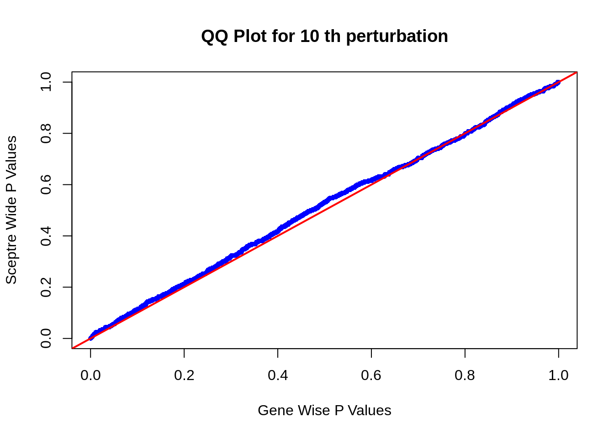
| Version | Author | Date |
|---|---|---|
| 8974f05 | jliucx | 2024-12-06 |
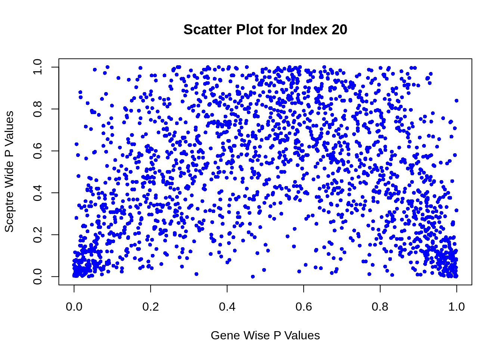
| Version | Author | Date |
|---|---|---|
| 8974f05 | jliucx | 2024-12-06 |
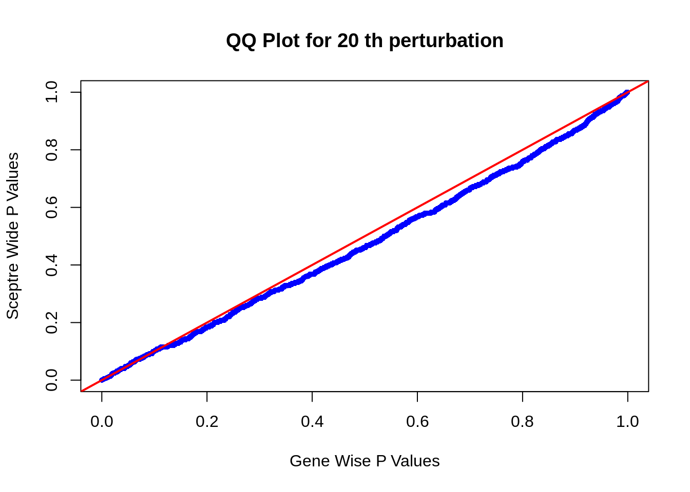
| Version | Author | Date |
|---|---|---|
| 8974f05 | jliucx | 2024-12-06 |
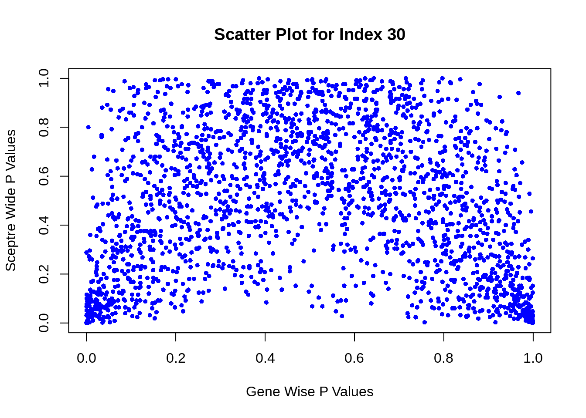
| Version | Author | Date |
|---|---|---|
| 8974f05 | jliucx | 2024-12-06 |
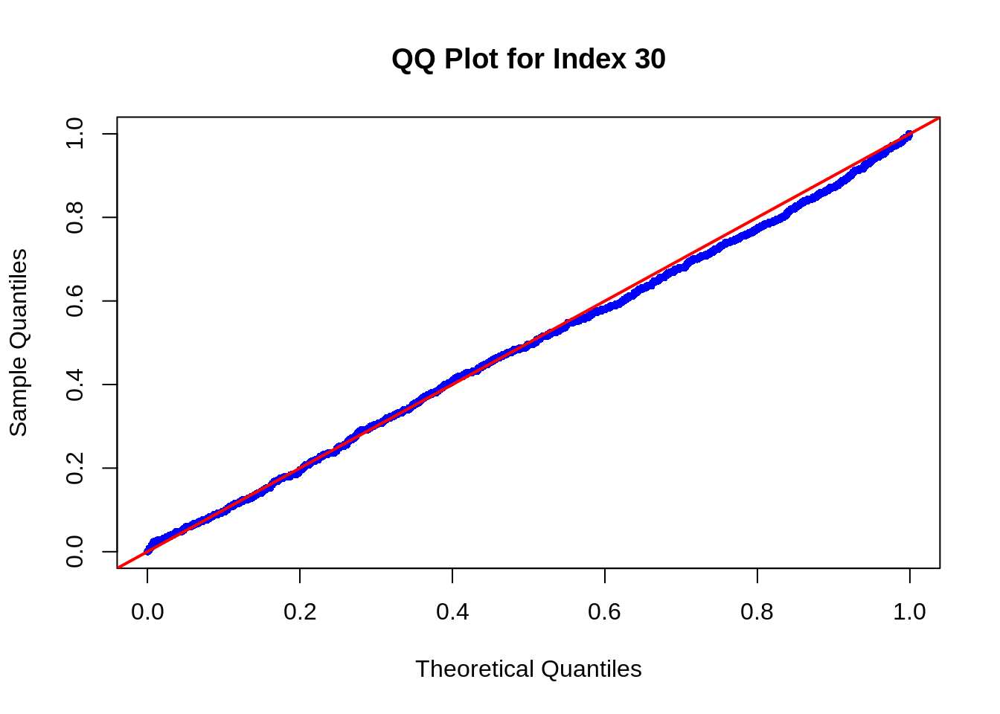
| Version | Author | Date |
|---|---|---|
| 8974f05 | jliucx | 2024-12-06 |
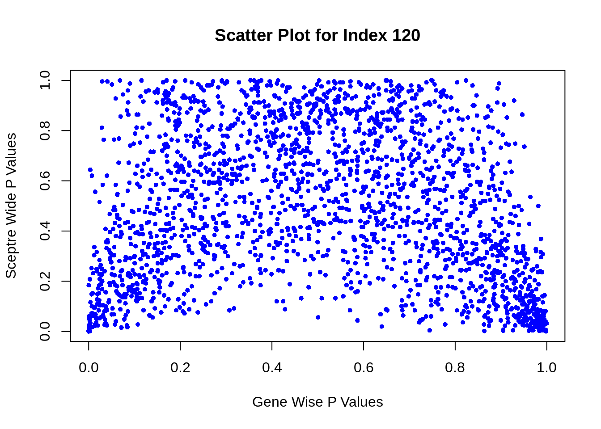
| Version | Author | Date |
|---|---|---|
| 8974f05 | jliucx | 2024-12-06 |
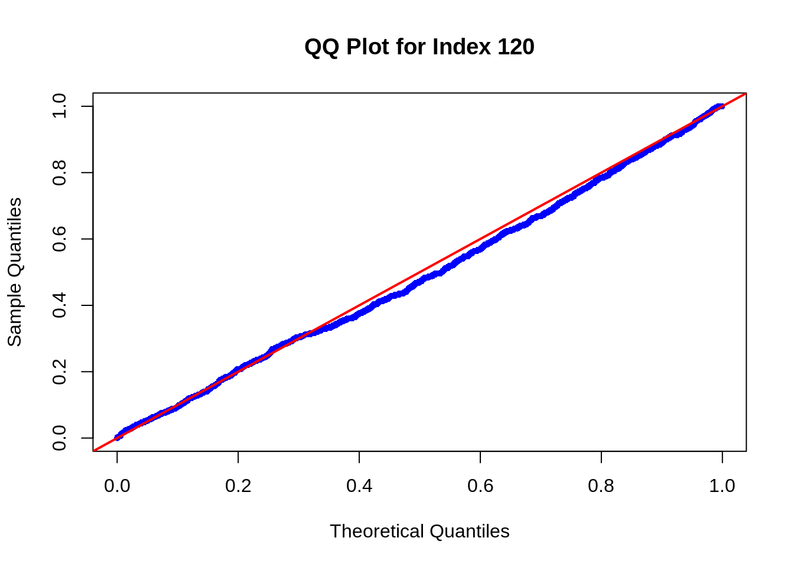
| Version | Author | Date |
|---|---|---|
| 8974f05 | jliucx | 2024-12-06 |
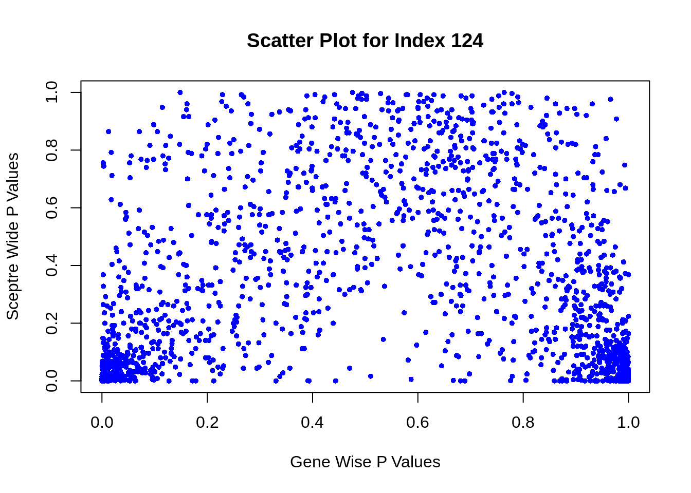
| Version | Author | Date |
|---|---|---|
| 8974f05 | jliucx | 2024-12-06 |
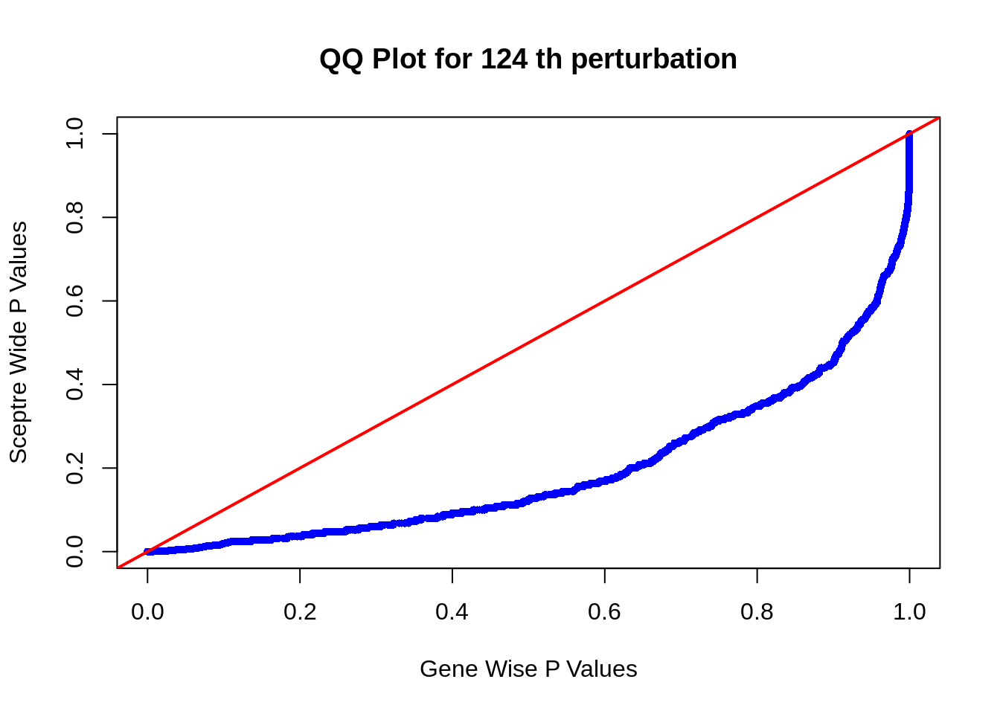
| Version | Author | Date |
|---|---|---|
| 8974f05 | jliucx | 2024-12-06 |
Convert sceptre p-value to test statistics
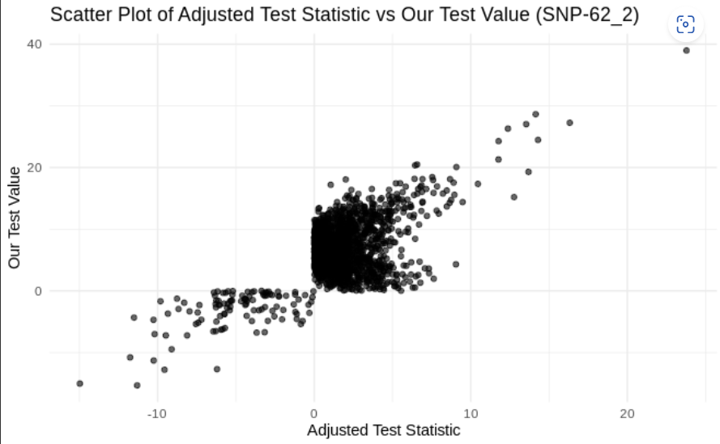
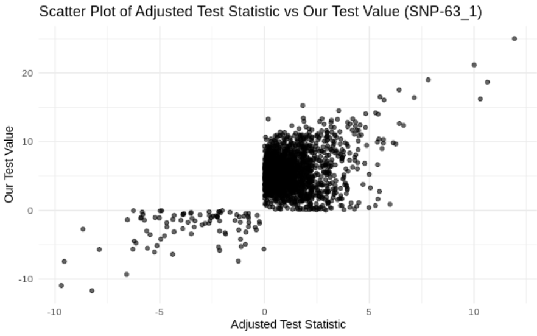
Compare gene module discoveries
ACAT of gene wise p from our method (i.e. t test)
library(ACAT)
module_results <- list()
# Iterate over each row of t_gene_p_no_approximation to compute ACAT p-values for each module
for (i in seq_len(nrow(gene_wise_p))) {
grna_id <- rownames(gene_wise_p)[i]
p_values_row <- gene_wise_p[i,] # Exclude grna_id column
# Initialize an empty list to store ACAT p-values and module names for each module
module_acat_pvals <- c()
module_names <- c()
# Iterate over each module in gene_modules to combine p-values using ACAT
for (j in seq_along(gene_modules)) {
module_name <- names(gene_modules)[j] # Get the module name
module_genes <- gene_modules[[j]][gene_modules[[j]] %in% colnames(p_values_row)]
# Only apply ACAT if there are genes to combine and they are not NA
if (length(module_genes) > 0) {
module_p_values <- as.numeric(p_values_row[module_genes])
module_p_values <- module_p_values[!is.na(module_p_values)] # Remove NAs
# Check if module_p_values still has values after removing NAs
if (length(module_p_values) > 0) {
acat_pval <- ACAT(module_p_values)
module_acat_pvals <- c(module_acat_pvals, acat_pval)
module_names <- c(module_names, module_name)
} else {
module_acat_pvals <- c(module_acat_pvals, NA)
module_names <- c(module_names, module_name)
}
} else {
module_acat_pvals <- c(module_acat_pvals, NA)
module_names <- c(module_names, module_name)
}
}
# Store results as a data frame in the list
module_results[[i]] <- data.frame(
grna_id = grna_id,
module = module_names,
acat_pval = module_acat_pvals
)
}
# Combine all results into a single data frame
module_results_t <- do.call(rbind, module_results)
module_results_t$bh_pval <- p.adjust(module_results_t$acat_pval, method = "BH")
module_results_t$identifier <- paste(module_results_t$grna_id, module_results_t$module, sep = "_")head(module_results_t) grna_id module acat_pval bh_pval
1 SNP-1_1 HALLMARK_TNFA_SIGNALING_VIA_NFKB 0.51914491 0.9322264
2 SNP-1_1 HALLMARK_HYPOXIA 0.62724531 0.9766941
3 SNP-1_1 HALLMARK_G2M_CHECKPOINT 0.30389703 0.7667471
4 SNP-1_1 HALLMARK_ADIPOGENESIS 0.04876272 0.3405858
5 SNP-1_1 HALLMARK_ESTROGEN_RESPONSE_EARLY 0.10709308 0.4885522
6 SNP-1_1 HALLMARK_ESTROGEN_RESPONSE_LATE 0.41331653 0.8610532
identifier
1 SNP-1_1_HALLMARK_TNFA_SIGNALING_VIA_NFKB
2 SNP-1_1_HALLMARK_HYPOXIA
3 SNP-1_1_HALLMARK_G2M_CHECKPOINT
4 SNP-1_1_HALLMARK_ADIPOGENESIS
5 SNP-1_1_HALLMARK_ESTROGEN_RESPONSE_EARLY
6 SNP-1_1_HALLMARK_ESTROGEN_RESPONSE_LATEACAT of gene wise p from sceptre glm
module_results <- list()
# Iterate over each row of t_gene_p_no_approximation to compute ACAT p-values for each module
for (i in seq_len(nrow(sceptre_wide))) {
grna_id <- rownames(sceptre_wide)[i]
p_values_row <- sceptre_wide[i,] # Exclude grna_id column
# Initialize an empty list to store ACAT p-values and module names for each module
module_acat_pvals <- c()
module_names <- c()
# Iterate over each module in gene_modules to combine p-values using ACAT
for (j in seq_along(gene_modules)) {
module_name <- names(gene_modules)[j] # Get the module name
module_genes <- gene_modules[[j]][gene_modules[[j]] %in% colnames(p_values_row)]
# Only apply ACAT if there are genes to combine and they are not NA
if (length(module_genes) > 0) {
module_p_values <- as.numeric(p_values_row[module_genes])
module_p_values <- module_p_values[!is.na(module_p_values)] # Remove NAs
# Check if module_p_values still has values after removing NAs
if (length(module_p_values) > 0) {
acat_pval <- ACAT(module_p_values)
module_acat_pvals <- c(module_acat_pvals, acat_pval)
module_names <- c(module_names, module_name)
} else {
module_acat_pvals <- c(module_acat_pvals, NA)
module_names <- c(module_names, module_name)
}
} else {
module_acat_pvals <- c(module_acat_pvals, NA)
module_names <- c(module_names, module_name)
}
}
# Store results as a data frame in the list
module_results[[i]] <- data.frame(
grna_id = grna_id,
module = module_names,
acat_pval = module_acat_pvals
)
}
# Combine all results into a single data frame
module_results_sceptre <- do.call(rbind, module_results)
module_results_sceptre$bh_pval <- p.adjust(module_results_sceptre$acat_pval, method = "BH")
module_results_sceptre$identifier <- paste(module_results_sceptre$grna_id, module_results_sceptre$module, sep = "_")head(module_results_sceptre) grna_id module acat_pval bh_pval
1 SNP-1_1 HALLMARK_TNFA_SIGNALING_VIA_NFKB 0.2577621 0.8174862
2 SNP-1_1 HALLMARK_HYPOXIA 0.1977606 0.7510908
3 SNP-1_1 HALLMARK_G2M_CHECKPOINT 0.3435884 0.8945221
4 SNP-1_1 HALLMARK_ADIPOGENESIS 1.0000000 1.0000000
5 SNP-1_1 HALLMARK_ESTROGEN_RESPONSE_EARLY 0.5996319 1.0000000
6 SNP-1_1 HALLMARK_ESTROGEN_RESPONSE_LATE 0.2195660 0.7747451
identifier
1 SNP-1_1_HALLMARK_TNFA_SIGNALING_VIA_NFKB
2 SNP-1_1_HALLMARK_HYPOXIA
3 SNP-1_1_HALLMARK_G2M_CHECKPOINT
4 SNP-1_1_HALLMARK_ADIPOGENESIS
5 SNP-1_1_HALLMARK_ESTROGEN_RESPONSE_EARLY
6 SNP-1_1_HALLMARK_ESTROGEN_RESPONSE_LATEComparison of Module p values (t-ACAT vs Sceptre-ACAT)
# Define indices
indices <- c(10, 20, 30, 120, 124)
# Loop through indices
for (k in indices) {
# Scatter Plot
plot(
module_results_t$acat_pval[(50 * k + 1):(50 * k + 50)],
module_results_sceptre$acat_pval[(50 * k + 1):(50 * k + 50)],
xlab = "T-ACAT P-Value",
ylab = "Sceptre ACAT P-Value",
main = paste0("Scatter Plot for Module P-Values of ", k, "th perturbation"),
pch = 16, # Point style
col = "blue", # Point color
cex = 0.7, # Point size
xlim = c(0,1),
ylim = c(0,1)
)
# Pause to allow the user to view the scatter plot
# readline(prompt = "Press [Enter] to view the QQ plot...")
# QQ Plot
qqplot(
module_results_t$acat_pval[(50 * k + 1):(50 * k + 50)],
module_results_sceptre$acat_pval[(50 * k + 1):(50 * k + 50)],
xlab = "T-ACAT P-Value",
ylab = "Sceptre ACAT P-Value",
main = paste0("QQ Plot for Module P-Values of ", k, "th perturbation"),
pch = 16,
col = "blue",
cex = 0.7
)
abline(0, 1, col = "red", lwd = 2) # Add reference line
# Pause before moving to the next index
# readline(prompt = "Press [Enter] to move to the next index...")
}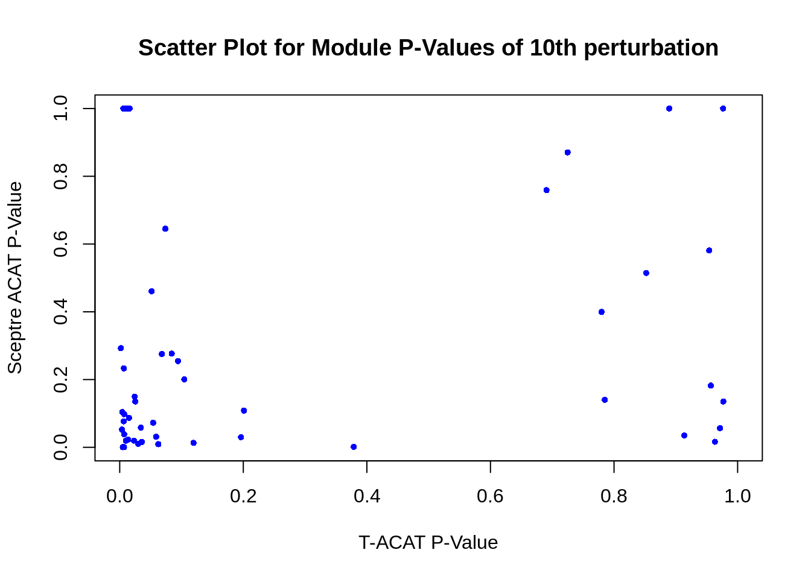
| Version | Author | Date |
|---|---|---|
| 8974f05 | jliucx | 2024-12-06 |
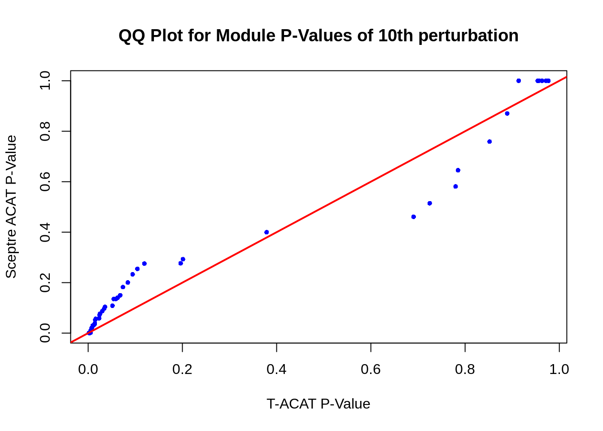
| Version | Author | Date |
|---|---|---|
| 8974f05 | jliucx | 2024-12-06 |
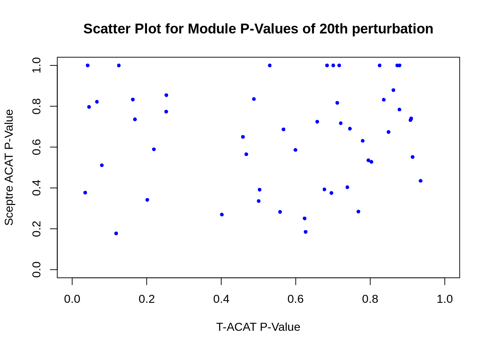
| Version | Author | Date |
|---|---|---|
| 8974f05 | jliucx | 2024-12-06 |
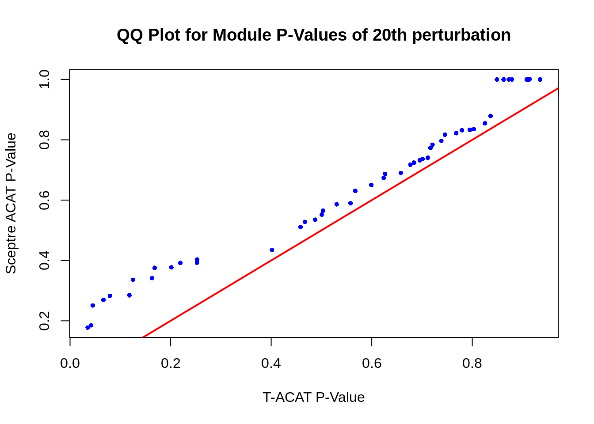
| Version | Author | Date |
|---|---|---|
| 8974f05 | jliucx | 2024-12-06 |

| Version | Author | Date |
|---|---|---|
| 8974f05 | jliucx | 2024-12-06 |
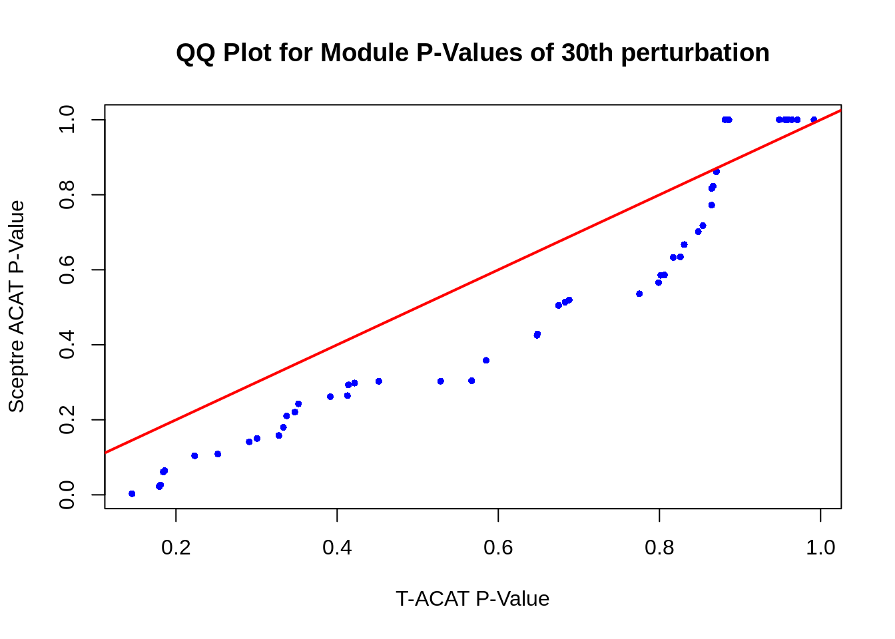
| Version | Author | Date |
|---|---|---|
| 8974f05 | jliucx | 2024-12-06 |
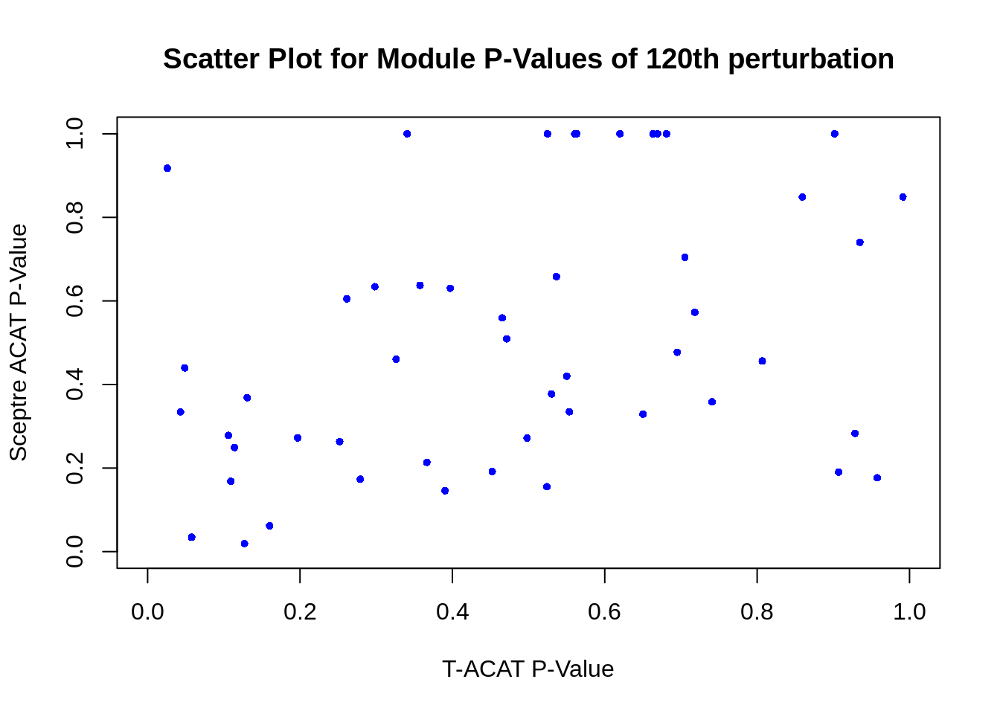
| Version | Author | Date |
|---|---|---|
| 8974f05 | jliucx | 2024-12-06 |

| Version | Author | Date |
|---|---|---|
| 8974f05 | jliucx | 2024-12-06 |
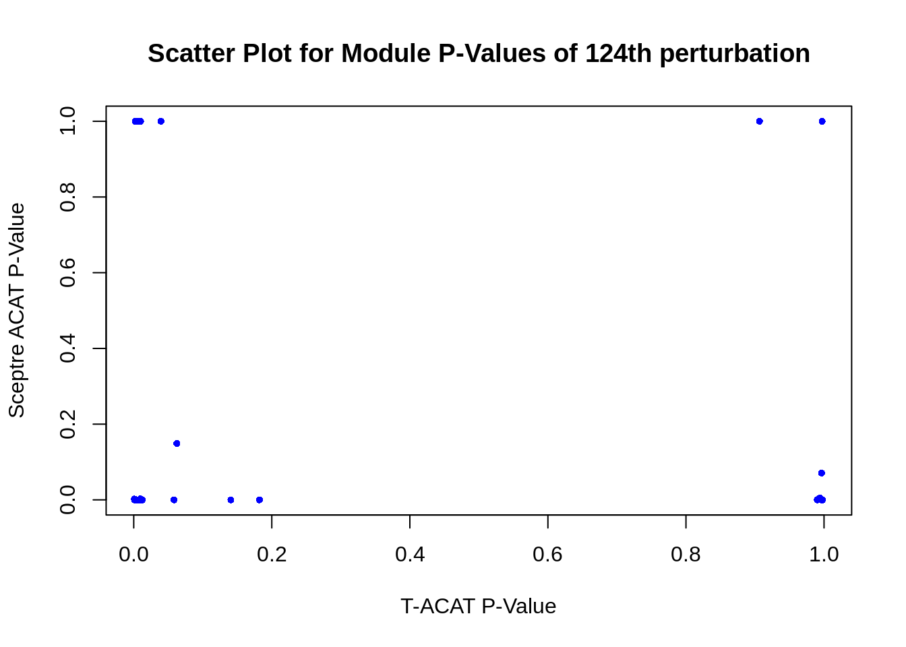
| Version | Author | Date |
|---|---|---|
| 8974f05 | jliucx | 2024-12-06 |
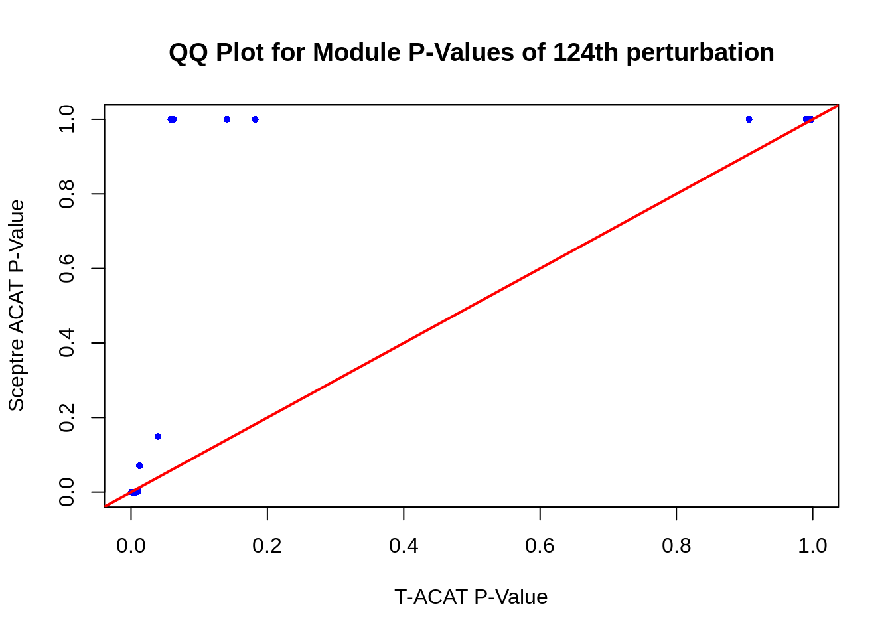
| Version | Author | Date |
|---|---|---|
| 8974f05 | jliucx | 2024-12-06 |
minp
library(tibble)
minp <- read.csv("output/startover/test/minp.csv")
minp_long <- minp %>%
rownames_to_column(var = "grna_id") %>% # Add row names as a column
pivot_longer(cols = -grna_id, names_to = "module", values_to = "p_value")
# Remove rows with NA p-values
minp_long <- minp_long %>% filter(!is.na(p_value))
# Apply global BH correction to all p-values
minp_long <- minp_long %>%
mutate(bh_pval = p.adjust(p_value, method = "BH"))
head(minp_long)# A tibble: 6 × 4
grna_id module p_value bh_pval
<chr> <chr> <dbl> <dbl>
1 SNP-1_1 HALLMARK_TNFA_SIGNALING_VIA_NFKB 0.495 0.750
2 SNP-1_1 HALLMARK_HYPOXIA 0.347 0.677
3 SNP-1_1 HALLMARK_G2M_CHECKPOINT 0.260 0.618
4 SNP-1_1 HALLMARK_ADIPOGENESIS 0.0376 0.257
5 SNP-1_1 HALLMARK_ESTROGEN_RESPONSE_EARLY 0.162 0.515
6 SNP-1_1 HALLMARK_ESTROGEN_RESPONSE_LATE 0.540 0.771our method
our_method <- read.csv("output/startover/test/our_method.csv",nrows = 208)
colnames(our_method)[1] <- "grna_id"
our_method_long <- our_method %>%
# rownames_to_column(var = "grna_id") %>% # Add row names as a column
pivot_longer(cols = -grna_id, names_to = "module", values_to = "p_value")
# Remove rows with NA p-values (if any)
our_method_long <- our_method_long %>% filter(!is.na(p_value))
# Apply global BH correction to all p-values
our_method_long <- our_method_long %>%
mutate(bh_pval = p.adjust(p_value, method = "BH"))
head(our_method_long)# A tibble: 6 × 4
grna_id module p_value bh_pval
<chr> <chr> <dbl> <dbl>
1 SNP-1_1 HALLMARK_TNFA_SIGNALING_VIA_NFKB 0.153 0.622
2 SNP-1_1 HALLMARK_HYPOXIA 0.171 0.635
3 SNP-1_1 HALLMARK_G2M_CHECKPOINT 0.0610 0.528
4 SNP-1_1 HALLMARK_ADIPOGENESIS 0.332 0.690
5 SNP-1_1 HALLMARK_ESTROGEN_RESPONSE_EARLY 0.235 0.661
6 SNP-1_1 HALLMARK_ESTROGEN_RESPONSE_LATE 0.742 0.810Comparison of Module p values (minp vs our method)
indices <- c(10, 20, 30, 120, 124)
# Loop through indices
for (k in indices) {
# Scatter Plot
plot(
our_method_long$p_value[(50 * k + 1):(50 * k + 50)],
minp_long$p_value[(50 * k + 1):(50 * k + 50)],
xlab = "Our P-Value",
ylab = "Minp P-Value",
main = paste0("Scatter Plot for Module P-Values of ", k, "th perturbation"),
pch = 16, # Point style
col = "blue", # Point color
cex = 0.7, # Point size
xlim = c(0,1),
ylim = c(0,1)
)
# Pause to allow the user to view the scatter plot
# readline(prompt = "Press [Enter] to view the QQ plot...")
# QQ Plot
qqplot(
our_method_long$p_value[(50 * k + 1):(50 * k + 50)],
minp_long$p_value[(50 * k + 1):(50 * k + 50)],
xlab = "Our P-Value",
ylab = "Minp P-Value",
main = paste0("QQ Plot for Module P-Values of ", k, "th perturbation"),
pch = 16,
col = "blue",
cex = 0.7
)
abline(0, 1, col = "red", lwd = 2) # Add reference line
# Pause before moving to the next index
# readline(prompt = "Press [Enter] to move to the next index...")
}
| Version | Author | Date |
|---|---|---|
| 8974f05 | jliucx | 2024-12-06 |

| Version | Author | Date |
|---|---|---|
| 8974f05 | jliucx | 2024-12-06 |

| Version | Author | Date |
|---|---|---|
| 8974f05 | jliucx | 2024-12-06 |

| Version | Author | Date |
|---|---|---|
| 8974f05 | jliucx | 2024-12-06 |

| Version | Author | Date |
|---|---|---|
| 8974f05 | jliucx | 2024-12-06 |
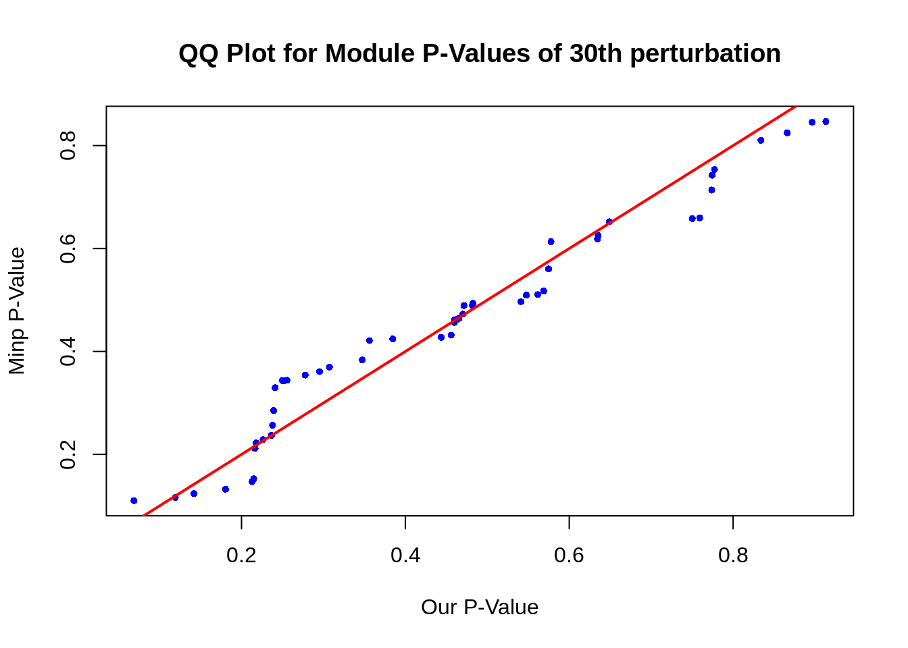
| Version | Author | Date |
|---|---|---|
| 8974f05 | jliucx | 2024-12-06 |
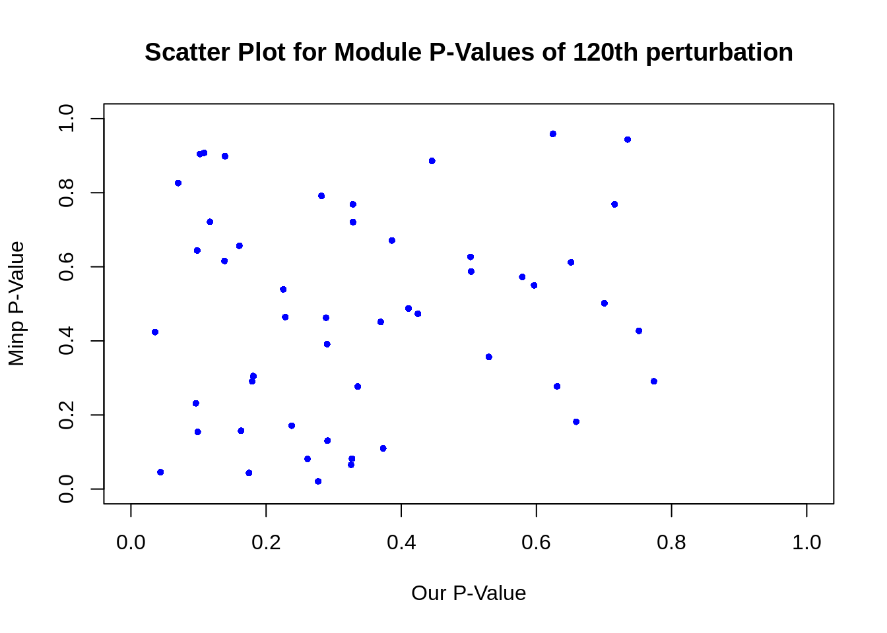
| Version | Author | Date |
|---|---|---|
| 8974f05 | jliucx | 2024-12-06 |
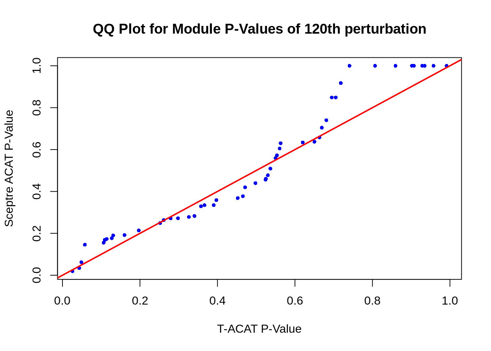
| Version | Author | Date |
|---|---|---|
| 8974f05 | jliucx | 2024-12-06 |
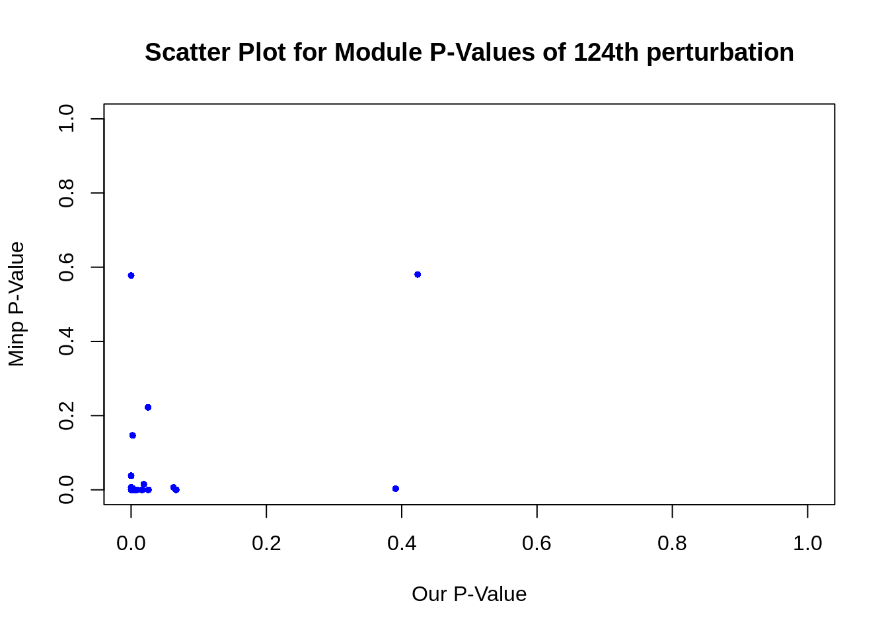
| Version | Author | Date |
|---|---|---|
| 8974f05 | jliucx | 2024-12-06 |
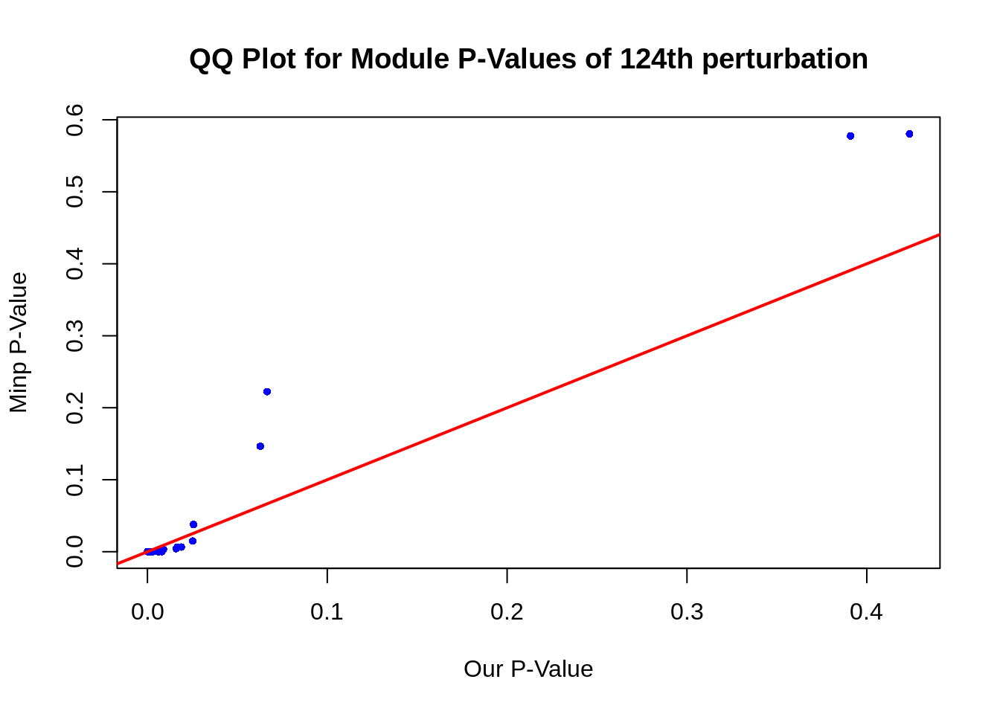
| Version | Author | Date |
|---|---|---|
| 8974f05 | jliucx | 2024-12-06 |
Comparison of discoveries of four methods
significant_level <- 0.2
significant_ids_gene_wise_p <- module_results_sceptre$identifier[module_results_sceptre$bh_pval < significant_level]
significant_ids_gene_wise_p_t <- module_results_t$identifier[module_results_t$bh_pval < significant_level]
significant_pairs <- minp_long %>%
filter(bh_pval < significant_level)
significant_pairs <- significant_pairs %>%
mutate(identifier = paste(grna_id, module, sep = "_"))
significant_identifiers_minp<- significant_pairs$identifier
significant_pairs_ours <- our_method_long %>%
filter(bh_pval < significant_level)
significant_pairs_ours <- significant_pairs_ours %>%
mutate(identifier = paste(grna_id, module, sep = "_"))
significant_identifiers_ours <- significant_pairs_ours$identifier
library(eulerr)
# Prepare the sets
venn_data <- list(
`Sceptre+ACAT` = significant_ids_gene_wise_p,
`t+ACAT` = significant_ids_gene_wise_p_t,
`minp method` = significant_identifiers_minp,
`Our method` = significant_identifiers_ours
)
# Generate the Euler diagram
plot(euler(venn_data),
fills = list(fill = c("red", "blue", "green","yellow"), alpha = 0.5),
edges = TRUE,
quantities = TRUE, # Add set sizes
main = paste("Significant Gene Modules Overlap at level", significant_level, "(no approximation)") )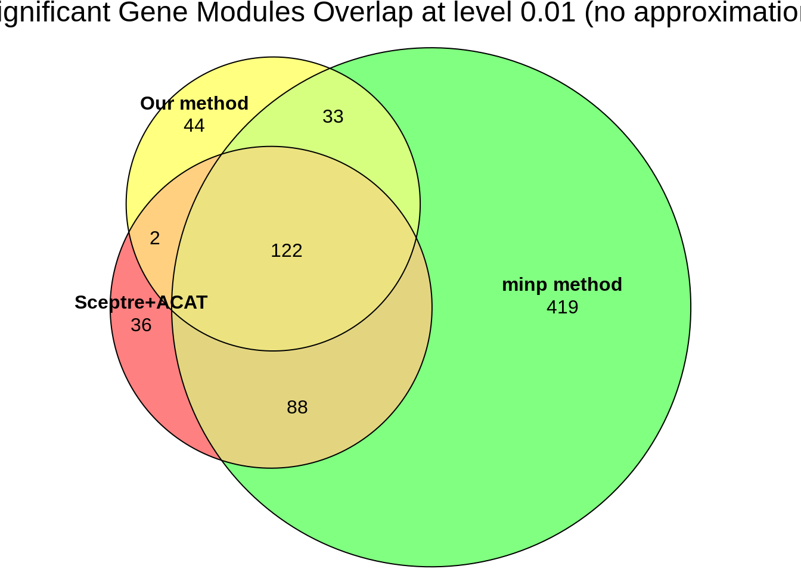
| Version | Author | Date |
|---|---|---|
| 8974f05 | jliucx | 2024-12-06 |
Calibration check
gg_qqplot <- function(ps, ci = 0.95, title = "QQ Plot") {
n <- length(ps)
df <- data.frame(
observed = -log10(sort(ps)),
expected = -log10(ppoints(n)),
clower = -log10(qbeta(p = (1 - ci) / 2, shape1 = 1:n, shape2 = n:1)),
cupper = -log10(qbeta(p = (1 + ci) / 2, shape1 = 1:n, shape2 = n:1))
)
log10Pe <- expression(paste("Expected -log"[10], plain(P)))
log10Po <- expression(paste("Observed -log"[10], plain(P)))
ggplot(df) +
geom_ribbon(mapping = aes(x = expected, ymin = clower, ymax = cupper), alpha = 0.1) +
geom_point(aes(expected, observed), size = 1.5, color = "red") +
geom_abline(intercept = 0, slope = 1, alpha = 0.5) +
xlab(log10Pe) + ylab(log10Po) +
ggtitle(title) # Add title
}
ntc_our <- our_method_long %>%
filter(startsWith(grna_id, "NTC")) %>%
select(grna_id, p_value)
ntc_minp <- minp_long %>%
filter(startsWith(grna_id, "NTC")) %>%
select(grna_id, p_value)
ntc_t <- module_results_t %>%
filter(startsWith(grna_id, "NTC")) %>%
select(grna_id, acat_pval)
ntc_sceptre <- module_results_sceptre %>%
filter(startsWith(grna_id, "NTC")) %>%
select(grna_id, acat_pval)ntc_sceptre grna_id acat_pval
1 NTC-1 5.896564e-01
2 NTC-1 1.000000e+00
3 NTC-1 1.000000e+00
4 NTC-1 1.000000e+00
5 NTC-1 2.421415e-01
6 NTC-1 4.801899e-01
7 NTC-1 2.191499e-01
8 NTC-1 1.000000e+00
9 NTC-1 1.000000e+00
10 NTC-1 1.496589e-01
11 NTC-1 4.249339e-01
12 NTC-1 5.237205e-02
13 NTC-1 6.887789e-01
14 NTC-1 3.448949e-02
15 NTC-1 3.035380e-01
16 NTC-1 1.000000e+00
17 NTC-1 1.988749e-01
18 NTC-1 6.529904e-01
19 NTC-1 1.000000e+00
20 NTC-1 7.115029e-02
21 NTC-1 1.000000e+00
22 NTC-1 6.395246e-01
23 NTC-1 8.465279e-01
24 NTC-1 1.000000e+00
25 NTC-1 6.170033e-01
26 NTC-1 1.000000e+00
27 NTC-1 4.850911e-01
28 NTC-1 4.106205e-01
29 NTC-1 1.000000e+00
30 NTC-1 5.339767e-01
31 NTC-1 2.624756e-01
32 NTC-1 1.000000e+00
33 NTC-1 4.013925e-01
34 NTC-1 2.352170e-01
35 NTC-1 4.791625e-01
36 NTC-1 3.629073e-01
37 NTC-1 5.601282e-01
38 NTC-1 7.683964e-01
39 NTC-1 1.000000e+00
40 NTC-1 3.577778e-01
41 NTC-1 3.117629e-01
42 NTC-1 5.220157e-02
43 NTC-1 6.385927e-01
44 NTC-1 5.035170e-01
45 NTC-1 5.853147e-01
46 NTC-1 2.223504e-01
47 NTC-1 5.442354e-01
48 NTC-1 2.403801e-01
49 NTC-1 7.671587e-02
50 NTC-1 5.198573e-01
51 NTC-2 5.400966e-01
52 NTC-2 1.520318e-01
53 NTC-2 3.129258e-02
54 NTC-2 1.000000e+00
55 NTC-2 1.000000e+00
56 NTC-2 7.825731e-01
57 NTC-2 1.000000e+00
58 NTC-2 3.515532e-01
59 NTC-2 1.715803e-14
60 NTC-2 3.799005e-02
61 NTC-2 3.269409e-01
62 NTC-2 1.000000e+00
63 NTC-2 1.490523e-01
64 NTC-2 4.508237e-01
65 NTC-2 4.244273e-01
66 NTC-2 7.365561e-02
67 NTC-2 2.984871e-02
68 NTC-2 2.444540e-31
69 NTC-2 1.000000e+00
70 NTC-2 2.820512e-01
71 NTC-2 7.518027e-01
72 NTC-2 8.929197e-01
73 NTC-2 6.707266e-01
74 NTC-2 1.000000e+00
75 NTC-2 3.447336e-01
76 NTC-2 1.266439e-01
77 NTC-2 4.834209e-02
78 NTC-2 2.813687e-01
79 NTC-2 1.413240e-01
80 NTC-2 2.595262e-02
81 NTC-2 2.219531e-02
82 NTC-2 1.478822e-01
83 NTC-2 6.279439e-01
84 NTC-2 8.457862e-01
85 NTC-2 8.358766e-02
86 NTC-2 7.536082e-01
87 NTC-2 6.490383e-01
88 NTC-2 4.782147e-01
89 NTC-2 1.157616e-01
90 NTC-2 2.333255e-01
91 NTC-2 8.836246e-01
92 NTC-2 4.508583e-03
93 NTC-2 6.762627e-01
94 NTC-2 1.918240e-01
95 NTC-2 2.259633e-01
96 NTC-2 1.795633e-01
97 NTC-2 3.014591e-01
98 NTC-2 5.436117e-01
99 NTC-2 2.858318e-01
100 NTC-2 1.865402e-01
101 NTC-4 1.000000e+00
102 NTC-4 1.000000e+00
103 NTC-4 1.000000e+00
104 NTC-4 1.000000e+00
105 NTC-4 7.726733e-01
106 NTC-4 7.024554e-01
107 NTC-4 1.000000e+00
108 NTC-4 1.000000e+00
109 NTC-4 1.000000e+00
110 NTC-4 1.758349e-01
111 NTC-4 1.000000e+00
112 NTC-4 1.000000e+00
113 NTC-4 1.000000e+00
114 NTC-4 4.002409e-01
115 NTC-4 1.000000e+00
116 NTC-4 6.031500e-01
117 NTC-4 1.000000e+00
118 NTC-4 1.000000e+00
119 NTC-4 1.000000e+00
120 NTC-4 9.978199e-03
121 NTC-4 6.518816e-01
122 NTC-4 8.412478e-01
123 NTC-4 8.760595e-01
124 NTC-4 2.378193e-01
125 NTC-4 2.127823e-01
126 NTC-4 1.000000e+00
127 NTC-4 2.086742e-01
128 NTC-4 5.794950e-02
129 NTC-4 3.516668e-01
130 NTC-4 3.109060e-01
131 NTC-4 5.054995e-01
132 NTC-4 4.527119e-01
133 NTC-4 1.653076e-01
134 NTC-4 1.000000e+00
135 NTC-4 1.000000e+00
136 NTC-4 1.000000e+00
137 NTC-4 1.000000e+00
138 NTC-4 7.177145e-01
139 NTC-4 1.250518e-01
140 NTC-4 6.686381e-01
141 NTC-4 9.951814e-02
142 NTC-4 7.655306e-02
143 NTC-4 1.414995e-01
144 NTC-4 8.525576e-01
145 NTC-4 8.693614e-01
146 NTC-4 9.214035e-01
147 NTC-4 1.679632e-01
148 NTC-4 9.595810e-01
149 NTC-4 5.273149e-01
150 NTC-4 1.274328e-01
151 NTC-5 1.000000e+00
152 NTC-5 1.000000e+00
153 NTC-5 6.730255e-01
154 NTC-5 3.820148e-01
155 NTC-5 6.428584e-01
156 NTC-5 5.118851e-01
157 NTC-5 6.120686e-01
158 NTC-5 2.518408e-01
159 NTC-5 5.536544e-01
160 NTC-5 2.696375e-01
161 NTC-5 2.112575e-01
162 NTC-5 4.120847e-01
163 NTC-5 6.212410e-01
164 NTC-5 1.130255e-01
165 NTC-5 1.000000e+00
166 NTC-5 8.289336e-01
167 NTC-5 1.000000e+00
168 NTC-5 5.089602e-01
169 NTC-5 1.000000e+00
170 NTC-5 1.612509e-01
171 NTC-5 1.000000e+00
172 NTC-5 1.000000e+00
173 NTC-5 6.080929e-01
174 NTC-5 5.249232e-01
175 NTC-5 1.000000e+00
176 NTC-5 4.532058e-01
177 NTC-5 4.574564e-01
178 NTC-5 1.000000e+00
179 NTC-5 1.000000e+00
180 NTC-5 4.054788e-01
181 NTC-5 5.519477e-01
182 NTC-5 5.261548e-01
183 NTC-5 1.844157e-01
184 NTC-5 5.988844e-01
185 NTC-5 7.562643e-01
186 NTC-5 4.467926e-01
187 NTC-5 4.650368e-01
188 NTC-5 1.000000e+00
189 NTC-5 1.000000e+00
190 NTC-5 1.000000e+00
191 NTC-5 1.000000e+00
192 NTC-5 2.446116e-01
193 NTC-5 7.799469e-01
194 NTC-5 2.262664e-02
195 NTC-5 4.564089e-01
196 NTC-5 7.216555e-01
197 NTC-5 4.595335e-01
198 NTC-5 5.938645e-01
199 NTC-5 6.555444e-01
200 NTC-5 6.985229e-01
201 NTC-6 7.070073e-01
202 NTC-6 1.000000e+00
203 NTC-6 1.000000e+00
204 NTC-6 1.000000e+00
205 NTC-6 6.968661e-01
206 NTC-6 1.000000e+00
207 NTC-6 5.165091e-01
208 NTC-6 1.000000e+00
209 NTC-6 6.261206e-01
210 NTC-6 5.959085e-01
211 NTC-6 1.000000e+00
212 NTC-6 1.000000e+00
213 NTC-6 1.000000e+00
214 NTC-6 5.167294e-01
215 NTC-6 2.973846e-01
216 NTC-6 1.000000e+00
217 NTC-6 1.000000e+00
218 NTC-6 8.106608e-01
219 NTC-6 1.000000e+00
220 NTC-6 1.000000e+00
221 NTC-6 1.422584e-01
222 NTC-6 8.127117e-01
223 NTC-6 6.023241e-01
224 NTC-6 6.173050e-01
225 NTC-6 1.000000e+00
226 NTC-6 5.495196e-01
227 NTC-6 4.468977e-01
228 NTC-6 1.000000e+00
229 NTC-6 1.000000e+00
230 NTC-6 6.330268e-01
231 NTC-6 2.037455e-01
232 NTC-6 7.014893e-01
233 NTC-6 7.244376e-01
234 NTC-6 5.804787e-01
235 NTC-6 5.496714e-01
236 NTC-6 3.387241e-01
237 NTC-6 7.122117e-01
238 NTC-6 1.000000e+00
239 NTC-6 1.000000e+00
240 NTC-6 5.150955e-01
241 NTC-6 5.774288e-01
242 NTC-6 3.241806e-01
243 NTC-6 3.358176e-01
244 NTC-6 3.635874e-01
245 NTC-6 8.374860e-01
246 NTC-6 8.569122e-01
247 NTC-6 1.000000e+00
248 NTC-6 4.544979e-01
249 NTC-6 5.766005e-01
250 NTC-6 2.340821e-01
251 NTC-7 1.043107e-01
252 NTC-7 1.656221e-01
253 NTC-7 2.291765e-01
254 NTC-7 1.000000e+00
255 NTC-7 3.717544e-01
256 NTC-7 2.069395e-01
257 NTC-7 4.057043e-01
258 NTC-7 1.000000e+00
259 NTC-7 7.900404e-01
260 NTC-7 1.921419e-01
261 NTC-7 1.000000e+00
262 NTC-7 1.028351e-01
263 NTC-7 3.168728e-01
264 NTC-7 1.271153e-01
265 NTC-7 1.257463e-01
266 NTC-7 6.002036e-02
267 NTC-7 1.000000e+00
268 NTC-7 1.000000e+00
269 NTC-7 6.141743e-01
270 NTC-7 1.542860e-01
271 NTC-7 3.620686e-01
272 NTC-7 4.964990e-01
273 NTC-7 4.004470e-01
274 NTC-7 1.407777e-01
275 NTC-7 6.633004e-02
276 NTC-7 2.711513e-01
277 NTC-7 1.490964e-01
278 NTC-7 1.000000e+00
279 NTC-7 8.912174e-02
280 NTC-7 6.446533e-01
281 NTC-7 6.802052e-02
282 NTC-7 1.593486e-01
283 NTC-7 1.000000e+00
284 NTC-7 1.000000e+00
285 NTC-7 1.852937e-01
286 NTC-7 1.000000e+00
287 NTC-7 5.288094e-01
288 NTC-7 1.000000e+00
289 NTC-7 3.383969e-01
290 NTC-7 9.087853e-02
291 NTC-7 4.736012e-01
292 NTC-7 1.950673e-02
293 NTC-7 1.000000e+00
294 NTC-7 5.615134e-01
295 NTC-7 8.453662e-01
296 NTC-7 6.300224e-01
297 NTC-7 7.771920e-01
298 NTC-7 6.984397e-01
299 NTC-7 9.233492e-01
300 NTC-7 7.569106e-01
301 NTC-8 1.000000e+00
302 NTC-8 1.000000e+00
303 NTC-8 4.100813e-02
304 NTC-8 1.000000e+00
305 NTC-8 2.771426e-01
306 NTC-8 1.417667e-01
307 NTC-8 4.717767e-02
308 NTC-8 1.567469e-01
309 NTC-8 2.367071e-01
310 NTC-8 1.000000e+00
311 NTC-8 2.542666e-01
312 NTC-8 1.000000e+00
313 NTC-8 4.699792e-01
314 NTC-8 2.366804e-02
315 NTC-8 7.320330e-01
316 NTC-8 1.158494e-01
317 NTC-8 1.000000e+00
318 NTC-8 6.336512e-01
319 NTC-8 2.337830e-01
320 NTC-8 5.321802e-01
321 NTC-8 1.000000e+00
322 NTC-8 1.922336e-01
323 NTC-8 8.406049e-01
324 NTC-8 3.263956e-02
325 NTC-8 7.278668e-01
326 NTC-8 1.099563e-02
327 NTC-8 3.082975e-01
328 NTC-8 8.323951e-01
329 NTC-8 3.559900e-01
330 NTC-8 7.499039e-01
331 NTC-8 1.000000e+00
332 NTC-8 1.000000e+00
333 NTC-8 1.026686e-01
334 NTC-8 8.736215e-01
335 NTC-8 1.754001e-01
336 NTC-8 1.870897e-01
337 NTC-8 5.943247e-01
338 NTC-8 1.092310e-02
339 NTC-8 1.653652e-01
340 NTC-8 7.566981e-01
341 NTC-8 7.068149e-01
342 NTC-8 1.000000e+00
343 NTC-8 8.712671e-01
344 NTC-8 3.081914e-02
345 NTC-8 6.674601e-01
346 NTC-8 4.545963e-01
347 NTC-8 8.816774e-02
348 NTC-8 8.366235e-01
349 NTC-8 5.118804e-01
350 NTC-8 1.164625e-01
351 NTC-9 1.000000e+00
352 NTC-9 5.460383e-01
353 NTC-9 1.000000e+00
354 NTC-9 2.176323e-01
355 NTC-9 6.553965e-01
356 NTC-9 5.501519e-01
357 NTC-9 1.960627e-01
358 NTC-9 5.119865e-01
359 NTC-9 2.424396e-01
360 NTC-9 1.000000e+00
361 NTC-9 8.076968e-01
362 NTC-9 1.000000e+00
363 NTC-9 4.726881e-02
364 NTC-9 5.835354e-02
365 NTC-9 6.491898e-01
366 NTC-9 1.853138e-01
367 NTC-9 1.000000e+00
368 NTC-9 7.509799e-01
369 NTC-9 5.055154e-01
370 NTC-9 8.261586e-01
371 NTC-9 2.618693e-01
372 NTC-9 1.000000e+00
373 NTC-9 1.000000e+00
374 NTC-9 1.003074e-01
375 NTC-9 1.014989e-01
376 NTC-9 4.094216e-02
377 NTC-9 1.000000e+00
378 NTC-9 4.676909e-02
379 NTC-9 7.181140e-01
380 NTC-9 3.816610e-01
381 NTC-9 4.809323e-01
382 NTC-9 1.000000e+00
383 NTC-9 4.994510e-02
384 NTC-9 1.000000e+00
385 NTC-9 4.806544e-01
386 NTC-9 1.000000e+00
387 NTC-9 6.804671e-02
388 NTC-9 6.494511e-01
389 NTC-9 7.229868e-01
390 NTC-9 2.983311e-01
391 NTC-9 3.146180e-01
392 NTC-9 7.375161e-02
393 NTC-9 5.366715e-01
394 NTC-9 5.754388e-03
395 NTC-9 7.282026e-01
396 NTC-9 1.111992e-01
397 NTC-9 7.667970e-01
398 NTC-9 1.779123e-02
399 NTC-9 1.865579e-02
400 NTC-9 1.618814e-02
401 NTC-10 1.194824e-01
402 NTC-10 6.093671e-01
403 NTC-10 1.000000e+00
404 NTC-10 1.000000e+00
405 NTC-10 1.000000e+00
406 NTC-10 3.340096e-02
407 NTC-10 1.000000e+00
408 NTC-10 8.016634e-02
409 NTC-10 1.896422e-01
410 NTC-10 1.029142e-01
411 NTC-10 9.706567e-02
412 NTC-10 1.736912e-01
413 NTC-10 8.457634e-02
414 NTC-10 1.644041e-01
415 NTC-10 1.703135e-01
416 NTC-10 1.230886e-01
417 NTC-10 1.000000e+00
418 NTC-10 1.000000e+00
419 NTC-10 1.000000e+00
420 NTC-10 1.000000e+00
421 NTC-10 1.358809e-01
422 NTC-10 1.052175e-01
423 NTC-10 8.182096e-01
424 NTC-10 9.053225e-02
425 NTC-10 1.000000e+00
426 NTC-10 1.000000e+00
427 NTC-10 1.000000e+00
428 NTC-10 1.000000e+00
429 NTC-10 7.220488e-02
430 NTC-10 5.071840e-01
431 NTC-10 5.519474e-01
432 NTC-10 9.739125e-02
433 NTC-10 2.591167e-01
434 NTC-10 1.626005e-01
435 NTC-10 1.000000e+00
436 NTC-10 1.054693e-01
437 NTC-10 3.612384e-01
438 NTC-10 3.776057e-02
439 NTC-10 2.545797e-02
440 NTC-10 3.834501e-02
441 NTC-10 1.329253e-02
442 NTC-10 1.238766e-01
443 NTC-10 1.000000e+00
444 NTC-10 8.448716e-01
445 NTC-10 3.275317e-03
446 NTC-10 9.354201e-02
447 NTC-10 2.517532e-01
448 NTC-10 2.894677e-01
449 NTC-10 5.812973e-03
450 NTC-10 6.027942e-01
451 NTC-11 1.000000e+00
452 NTC-11 5.814896e-01
453 NTC-11 1.000000e+00
454 NTC-11 1.031946e-01
455 NTC-11 1.000000e+00
456 NTC-11 2.764734e-01
457 NTC-11 1.000000e+00
458 NTC-11 4.633256e-01
459 NTC-11 1.000000e+00
460 NTC-11 1.000000e+00
461 NTC-11 2.841801e-02
462 NTC-11 2.608109e-01
463 NTC-11 1.745313e-01
464 NTC-11 1.419239e-01
465 NTC-11 1.000000e+00
466 NTC-11 4.164271e-01
467 NTC-11 1.862725e-01
468 NTC-11 3.318153e-01
469 NTC-11 3.125985e-01
470 NTC-11 6.550046e-01
471 NTC-11 1.000000e+00
472 NTC-11 6.686621e-01
473 NTC-11 1.000000e+00
474 NTC-11 1.332191e-01
475 NTC-11 7.186178e-01
476 NTC-11 1.000000e+00
477 NTC-11 7.756353e-02
478 NTC-11 1.099840e-01
479 NTC-11 1.000000e+00
480 NTC-11 1.000000e+00
481 NTC-11 6.314714e-01
482 NTC-11 1.610089e-01
483 NTC-11 6.820763e-01
484 NTC-11 1.228352e-01
485 NTC-11 1.000000e+00
486 NTC-11 2.503166e-01
487 NTC-11 1.000000e+00
488 NTC-11 1.000000e+00
489 NTC-11 4.477717e-02
490 NTC-11 2.105732e-01
491 NTC-11 5.314069e-01
492 NTC-11 2.214633e-01
493 NTC-11 1.000000e+00
494 NTC-11 7.269704e-01
495 NTC-11 8.372354e-01
496 NTC-11 8.368811e-01
497 NTC-11 6.841861e-01
498 NTC-11 1.000000e+00
499 NTC-11 1.564449e-01
500 NTC-11 8.963191e-01gg_qqplot(as.vector(ntc_our$p_value), title="Negative control our method")
| Version | Author | Date |
|---|---|---|
| 8974f05 | jliucx | 2024-12-06 |
gg_qqplot(as.vector(ntc_minp$p_value), title="Negative control minp")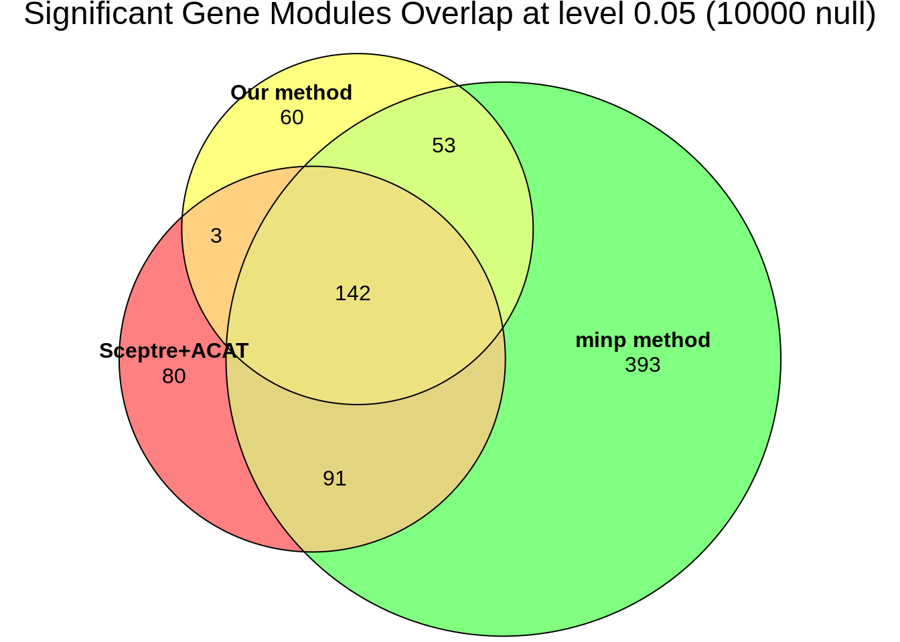
| Version | Author | Date |
|---|---|---|
| 8974f05 | jliucx | 2024-12-06 |
gg_qqplot(as.vector(ntc_t$acat_pval), title="Negative control t-ACAT")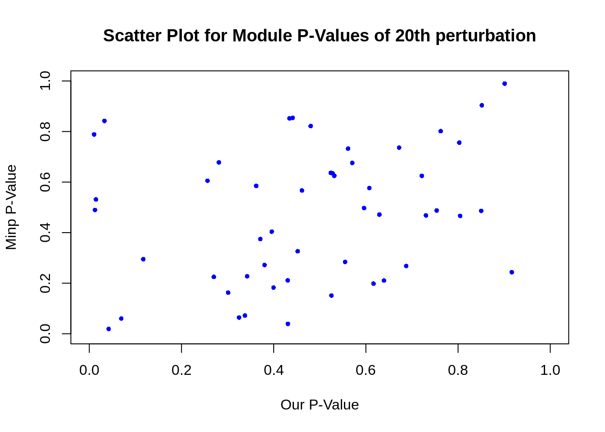
| Version | Author | Date |
|---|---|---|
| 8974f05 | jliucx | 2024-12-06 |
gg_qqplot(as.vector(ntc_sceptre$acat_pval), title="Negative control sceptre-ACAT")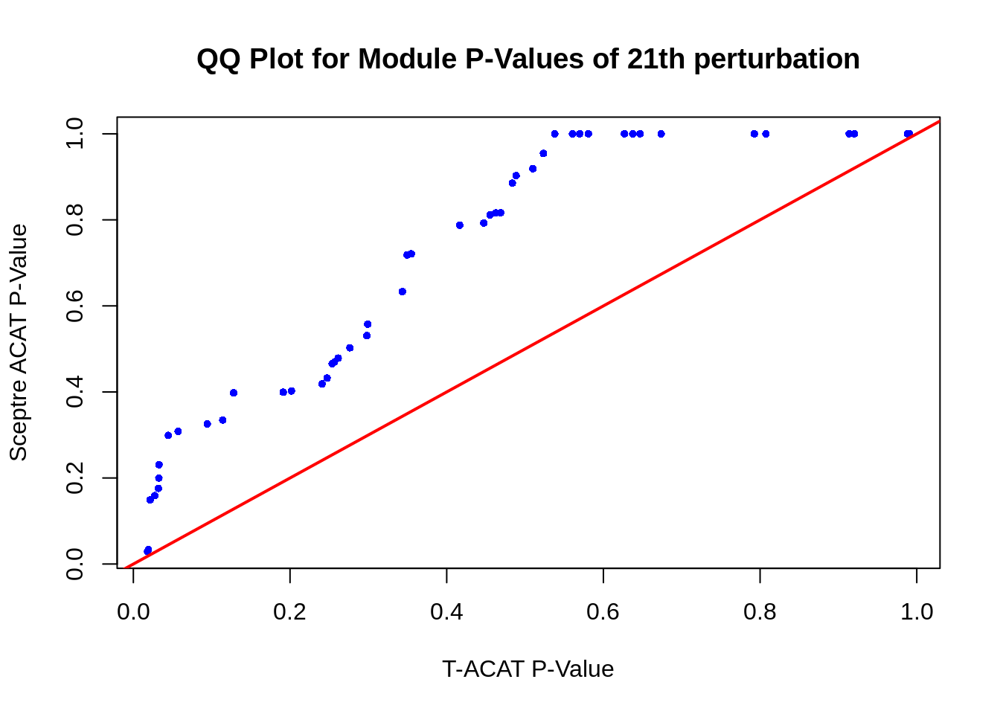
| Version | Author | Date |
|---|---|---|
| 8974f05 | jliucx | 2024-12-06 |
sessionInfo()R version 4.1.0 (2021-05-18)
Platform: x86_64-pc-linux-gnu (64-bit)
Running under: CentOS Linux 8
Matrix products: default
BLAS/LAPACK: /software/openblas-0.2.19-el8-x86_64/lib/libopenblas_haswellp-r0.2.19.so
locale:
[1] LC_CTYPE=en_US.UTF-8 LC_NUMERIC=C LC_TIME=C
[4] LC_COLLATE=C LC_MONETARY=C LC_MESSAGES=C
[7] LC_PAPER=C LC_NAME=C LC_ADDRESS=C
[10] LC_TELEPHONE=C LC_MEASUREMENT=C LC_IDENTIFICATION=C
attached base packages:
[1] stats graphics grDevices utils datasets methods base
other attached packages:
[1] eulerr_7.0.2 tibble_3.2.1 ACAT_0.91 tidyr_1.3.0
[5] readr_1.4.0 dplyr_1.1.4 ggplot2_3.5.1 workflowr_1.7.1
loaded via a namespace (and not attached):
[1] tidyselect_1.2.0 xfun_0.45 bslib_0.7.0 purrr_1.0.2
[5] colorspace_2.1-0 vctrs_0.6.4 generics_0.1.3 htmltools_0.5.8.1
[9] yaml_2.2.1 utf8_1.2.1 rlang_1.1.2 jquerylib_0.1.4
[13] later_1.2.0 pillar_1.9.0 glue_1.6.2 withr_2.5.2
[17] lifecycle_1.0.4 stringr_1.5.1 munsell_0.5.0 gtable_0.3.0
[21] evaluate_0.23 labeling_0.4.3 knitr_1.48 callr_3.7.6
[25] fastmap_1.1.1 httpuv_1.6.1 ps_1.7.5 fansi_1.0.5
[29] highr_0.11 Rcpp_1.0.12 promises_1.2.0.1 scales_1.3.0
[33] cachem_1.0.8 jsonlite_1.8.7 farver_2.1.1 fs_1.6.3
[37] hms_1.1.0 digest_0.6.33 stringi_1.6.2 processx_3.8.4
[41] getPass_0.2-2 polyclip_1.10-6 rprojroot_2.0.4 grid_4.1.0
[45] cli_3.6.1 tools_4.1.0 magrittr_2.0.3 sass_0.4.9
[49] crayon_1.5.2 whisker_0.4.1 pkgconfig_2.0.3 ellipsis_0.3.2
[53] polylabelr_0.2.0 rmarkdown_2.27 httr_1.4.2 rstudioapi_0.15.0
[57] R6_2.5.1 git2r_0.32.0 compiler_4.1.0